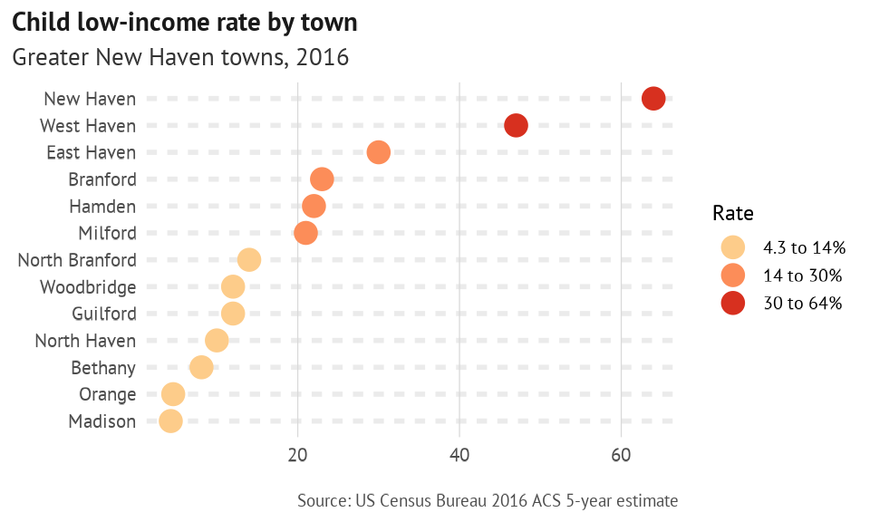

This is a simple workflow that makes use of functions in camiller to analyze and visualize some Census American Community Survey data. The data was downloaded with tidycensus, cleaned up a little bit, and is all included in this package.
The dataset pov_age contains estimates and margins of error (MOEs) of residents by age group in different ratio brackets compared to the federal poverty line by town in Greater New Haven.
head(pov_age)
#> # A tibble: 6 x 5
#> name age ratio estimate moe
#> <chr> <chr> <chr> <dbl> <dbl>
#> 1 Bethany Under 6 years Poverty status determined 274 146
#> 2 Bethany Under 6 years Under .50 0 17
#> 3 Bethany Under 6 years .50 to .74 0 17
#> 4 Bethany Under 6 years .75 to .99 8 15
#> 5 Bethany Under 6 years 1.00 to 1.24 0 17
#> 6 Bethany Under 6 years 1.25 to 1.49 0 17The function add_grps calls the function make_grps, which makes it easy to aggregate sums by collapsing multiple subgroups into one larger group. These functions take a list of larger categories, with the indexes of different subgroups in that column. These are easy to figure out by calling unique on the column of interest.
unique(pov_age$ratio)
#> [1] "Poverty status determined" "Under .50"
#> [3] ".50 to .74" ".75 to .99"
#> [5] "1.00 to 1.24" "1.25 to 1.49"
#> [7] "1.50 to 1.74" "1.75 to 1.84"
#> [9] "1.85 to 1.99" "2.00 to 2.99"
#> [11] "3.00 to 3.99" "4.00 to 4.99"
#> [13] "5.00 and over"
unique(pov_age$age)
#> [1] "Under 6 years" "6 to 11 years" "12 to 17 years"
#> [4] "18 to 24 years" "25 to 34 years" "35 to 44 years"
#> [7] "45 to 54 years" "55 to 64 years" "65 to 74 years"
#> [10] "75 years and over"
ratio_grps <- list(
determined = 1,
poverty = 2:4,
low_income = 2:9
)
age_grps <- list(
young_children = 1,
children = 1:3,
seniors = 9:10
)Alternatively, show_uniq will print out the unique values of a column with their indexes, and return the original data frame unchanged. This is convenient for finding positions without having to break a workflow.
pov_age %>%
show_uniq(age) %>%
group_by(name, ratio)
#> 1: Under 6 years 2: 6 to 11 years 3: 12 to 17 years
#> 4: 18 to 24 years 5: 25 to 34 years 6: 35 to 44 years
#> 7: 45 to 54 years 8: 55 to 64 years 9: 65 to 74 years
#> 10: 75 years and over
#> # A tibble: 1,690 x 5
#> # Groups: name, ratio [169]
#> name age ratio estimate moe
#> <chr> <chr> <chr> <dbl> <dbl>
#> 1 Bethany Under 6 years Poverty status determined 274 146
#> 2 Bethany Under 6 years Under .50 0 17
#> 3 Bethany Under 6 years .50 to .74 0 17
#> 4 Bethany Under 6 years .75 to .99 8 15
#> 5 Bethany Under 6 years 1.00 to 1.24 0 17
#> 6 Bethany Under 6 years 1.25 to 1.49 0 17
#> 7 Bethany Under 6 years 1.50 to 1.74 47 66
#> 8 Bethany Under 6 years 1.75 to 1.84 0 17
#> 9 Bethany Under 6 years 1.85 to 1.99 0 17
#> 10 Bethany Under 6 years 2.00 to 2.99 20 23
#> # … with 1,680 more rowsUsing dplyr::group_by(name, ratio) and then add_grps gives aggregates of estimates and MOEs for ratio levels and towns, with the original age groups collapsed into the desired, larger age groups. MOE calculations are done using tidycensus. For example:
c("Under 6 years", "6 to 11 years", "12 to 17 years")
becomes children. The same is then done to collapse ratios. calc_shares then calculates shares of residents in each group over the denominator "determined", and, optionally, calculates MOEs for this proportion.
pov_rates <- pov_age %>%
mutate_at(vars(age, ratio), as_factor) %>%
group_by(name, ratio) %>%
add_grps(age_grps, group = age, value = estimate, moe = moe) %>%
group_by(name, age) %>%
add_grps(ratio_grps, group = ratio, value = estimate, moe = moe) %>%
calc_shares(group = ratio, denom = "determined", value = estimate, moe = moe)head(pov_rates)
#> # A tibble: 6 x 7
#> # Groups: name, age [2]
#> name age ratio estimate moe share sharemoe
#> <chr> <fct> <fct> <dbl> <dbl> <dbl> <dbl>
#> 1 Bethany young_children determined 274 146 NA NA
#> 2 Bethany young_children poverty 8 28 0.029 0.101
#> 3 Bethany young_children low_income 55 79 0.201 0.268
#> 4 Bethany children determined 1259 230 NA NA
#> 5 Bethany children poverty 25 43 0.02 0.034
#> 6 Bethany children low_income 102 92 0.081 0.072The function brk_labels allows for cleaning up break labels, such as those generated using cut. See ?brk_labels for formatting options. theme_din is a clean ggplot2 theme that works well for dot plots and bar charts.
This legend is unnecessary and not a good idea, just a place to display the output of brk_labels.
pal <- c("#FDCC8A", "#FC8D59", "#D7301F")
pov_rates %>%
filter(ratio == "low_income", age == "children") %>%
mutate(share = signif(share, digits = 2)) %>%
ungroup() %>%
mutate(name = as.factor(name) %>% fct_reorder(share, max)) %>%
arrange(name) %>%
mutate(brk = cut(share, breaks = c(min(share), 0.14, 0.3, max(share)), include.lowest = T)) %>%
ggplot(aes(x = name, y = share, color = brk)) +
geom_point(size = 4) +
coord_flip() +
scale_color_manual(values = pal,
labels = function(x) brk_labels(x, format = "percent", mult_by = 100)) +
theme_din(base_family = "ptsans", base_size = 10, xgrid = T, ygrid = "dotted") +
scale_y_continuous(labels = function(x) sprintf("%0g", x * 100)) +
labs(x = NULL, y = NULL, color = "Rate", title = "Child low-income rate by town", subtitle = "Greater New Haven towns, 2016", caption = "Source: US Census Bureau 2016 ACS 5-year estimate")
The moe_test function applies t-tests for differences between two estimates, given their MOEs. This works well for comparing values in one year to those in another, or between related locations or groups. The grunt-work of these calculations is done with tidycensus functions. Included in the package is the pov_trend tibble for testing out significance testing on data in both 2010 and 2016.
pov_trend <- pov_age_10_16 %>%
mutate_at(vars(age, ratio), as_factor) %>%
group_by(name, year, ratio) %>%
add_grps(age_grps, group = age, value = estimate, moe = moe) %>%
group_by(name, year, age) %>%
add_grps(ratio_grps, group = ratio, value = estimate, moe = moe) %>%
calc_shares(group = ratio, denom = "determined", value = estimate, moe = moe)The output of moe_test includes optional intermediary calculations, such as standard errors and Z-scores used for significance testing.
pov_sigs <- pov_trend %>%
filter(ratio == "low_income") %>%
select(-estimate, -moe, -ratio) %>%
ungroup() %>%
mutate(year = paste0("y", year)) %>%
make_wide(share, sharemoe, group = year) %>%
moe_test(est1 = y2010_share, moe1 = y2010_sharemoe, est2 = y2016_share, moe2 = y2016_sharemoe, alpha = 0.1)
pov_sigs %>%
select(name, age, diff:isSig_90) %>%
filter(name %in% c("New Haven", "Hamden"))
#> # A tibble: 6 x 8
#> name age diff se1 se2 se z_score isSig_90
#> <chr> <fct> <dbl> <dbl> <dbl> <dbl> <dbl> <lgl>
#> 1 Hamden young_children -0.089 0.0444 0.0353 0.0567 -1.57 FALSE
#> 2 Hamden children 0.0210 0.0237 0.0255 0.0348 0.603 FALSE
#> 3 Hamden seniors 0.01000 0.0188 0.0207 0.0280 0.357 FALSE
#> 4 New Haven young_children 0.0610 0.0401 0.0401 0.0567 1.07 FALSE
#> 5 New Haven children 0.068 0.0225 0.0207 0.0305 2.23 TRUE
#> 6 New Haven seniors -0.005 0.0213 0.0201 0.0292 -0.171 FALSE